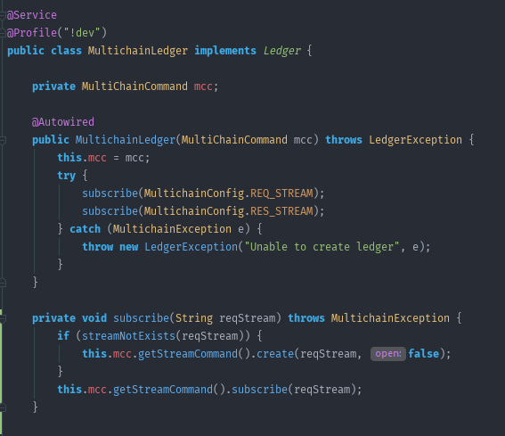

Język wysokiego poziomu
Język wysokiego poziomu (ang. high-level programming language) – typ języka programowania, którego składnia i słowa kluczowe mają maksymalnie ułatwić rozumienie kodu programu przez człowieka, tym samym zwiększając poziom abstrakcji i dystansując się od sprzętowych niuansów. Większość z nich można zaliczyć do języków uniwersalnych, służących do rozwiązywania szerokiego zakresu problemów. Kod napisany w języku wysokiego poziomu nie jest bezpośrednio „zrozumiały” przez procesor komputera – większość kodu stanowią normalne słowa, jak w języku naturalnym. Aby umożliwić wykonanie programu napisanego w takim języku należy wpierw poddać go procesowi kompilacji. Do języków wysokiego poziomu zalicza się m.in. Pascal, C, C++, Logo i BASIC[1][2].Pojęcie „język wysokiego poziomu” oznacza odwoływanie się do wyższego poziomu abstrakcji niż poziom kodu maszynowego, a nawet poziom języków niskopoziomowych.
